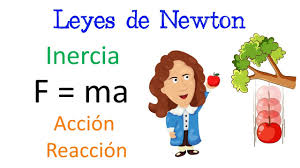
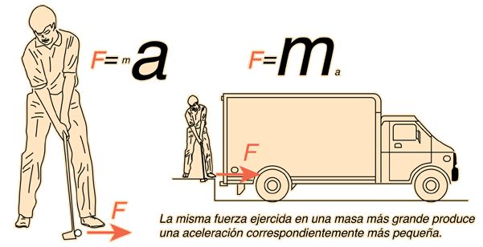
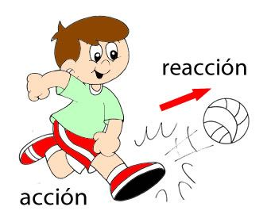

Las Leyes de Newton

|
|
|
|
|
|---|
Son tres principios fundamentales de la dinámica, formuladas por Isaac Newton en el siglo XVII. Estas leyes explican cómo se comportan los cuerpos en movimiento y son la base de la mecánica clásica.
Primera Ley de Newton: Ley de la Inercia
"Todo cuerpo permanece en estado de reposo o de movimiento rectilíneo uniforme a menos que una fuerza externa actúe sobre él."
¿Qué significa?
Un objeto no cambiará su estado de movimiento (si está en reposo, seguirá quieto; si se mueve, seguirá haciéndolo en línea recta y a velocidad constante) a menos que algo (una fuerza) lo obligue a hacerlo.
Concepto clave: Inercia
La inercia es la tendencia de los objetos a resistirse a cambios en su movimiento. Cuanto más masa tiene un objeto, más inercia posee.
Ejemplo:
Si empujas una pelota en el espacio (sin fricción ni gravedad), seguirá moviéndose indefinidamente en línea recta. En la Tierra, las pelotas se detienen porque hay fuerzas externas (como la fricción y el aire) que actúan sobre ellas.
Segunda Ley de Newton: Ley de la Fuerza y la Aceleración
"La aceleración de un objeto es directamente proporcional a la fuerza neta que actúa sobre él, e inversamente proporcional a su masa."
Fórmula matemática:
𝐹 = 𝑚 ⋅ 𝑎
𝐹
⃗
F
= fuerza neta (en Newtons, N)
𝑚
⃗
m = masa del objeto (en kg)
𝑎
⃗
a
= aceleración (en m/s²)
Si aplicas una fuerza a un objeto, este se acelera. Cuanto mayor es la fuerza, mayor es la aceleración. Pero si el objeto es muy pesado (mayor masa), costará más acelerarlo.
Ejemplo:
-Empujar un carrito vacío (poca masa) acelera fácilmente.
-Empujar el mismo carrito lleno de sacos (más masa) requiere más fuerza para lograr la misma aceleración.
Tercera Ley de Newton: Ley de Acción y Reacción
"Para cada acción hay una reacción de igual magnitud y en sentido opuesto."
¿Qué significa?
Cuando un objeto ejerce una fuerza sobre otro, el segundo objeto ejerce una fuerza igual y contraria sobre el primero. Las fuerzas siempre actúan en pares.
Ejemplo:
Si saltas, tus piernas empujan el suelo hacia abajo (acción), y el suelo te empuja hacia arriba con la misma fuerza (reacción), lo que te impulsa en el aire.
Al disparar un arma, la bala sale hacia adelante y el arma retrocede hacia atrás.
Relación entre las 3 leyes
-La Primera Ley describe lo que ocurre si no hay fuerza: el objeto sigue como está (reposo o movimiento constante).
-La Segunda Ley explica cómo se comporta un objeto si hay una fuerza neta actuando: se acelera.
-La Tercera Ley muestra que toda fuerza es parte de una interacción mutua: siempre hay una fuerza opuesta igual.